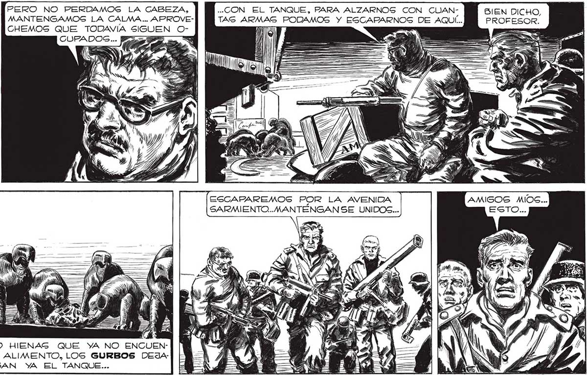
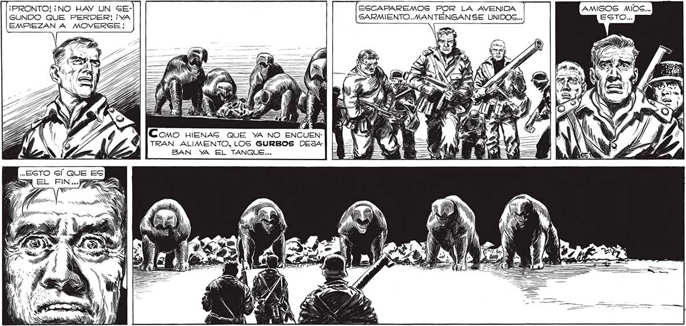

214 Gl, LOS TENDREMOS ENCIMA... 1Y NO PODREMOS NI SIQUIERA DEFENDER: NOS! ¡NUESTRAG ARMAS SON INSERVIBLES CONTRA ELLOS! We AOS ) PERO NO PERDAMOS LA CABEZA, ..CON EL TANQUE, PARA ALZARNOGS CON CUAN- BIEN DICHO, MANTENGAMOS LA CALMA... APROVE- TAG ARMAS PODAMOS Y ESCAPARNOSG DE AQUI... PROFESOR. CHEMOS QUE TODAVÍA SIGUEN O- 7, = > Y) ) ", ) il Y) ¡PRONTO! ¡NO HAY UN GE- ESCAFAREMOS POR LA AVENIDA GUNDO QUE PERDER! ¡YA SARMIENTO... MANTENGANSE UNIDOS... EMPIEZAN A MOVERSE! 7 AS " PP TRAN ALIMENTO, LOS GURBOS BAN YA EL TANQUE... : SN IPOD 4 ¿a CORA SON ON NV £ 7) ho Ñ W q A y: "UE , GP 2380 OR > IN NOS y PE NS 4

